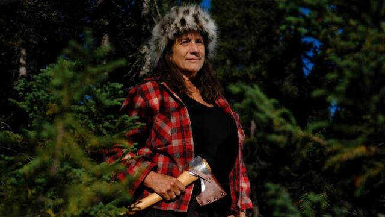
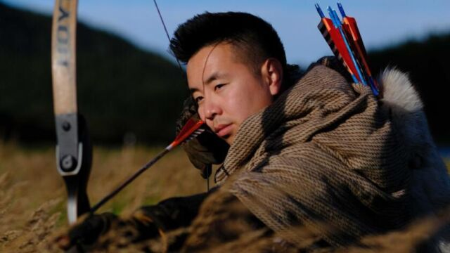
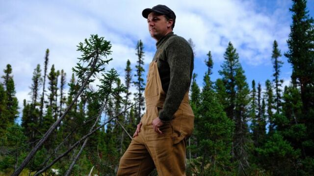
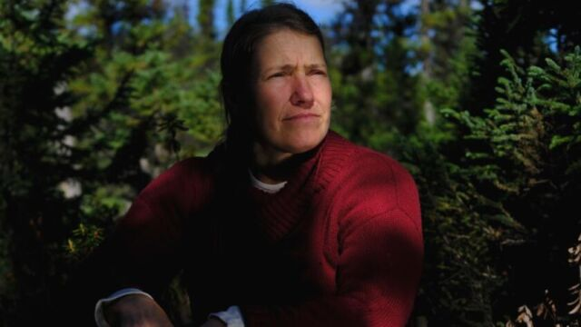
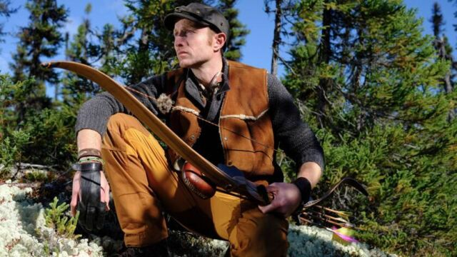
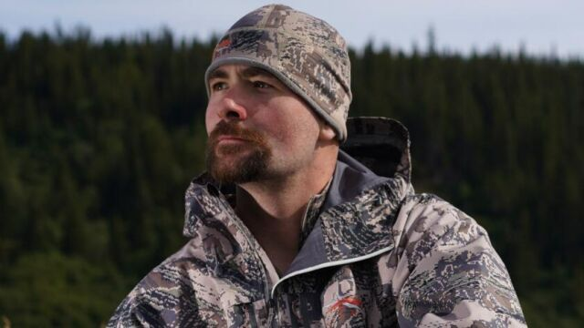
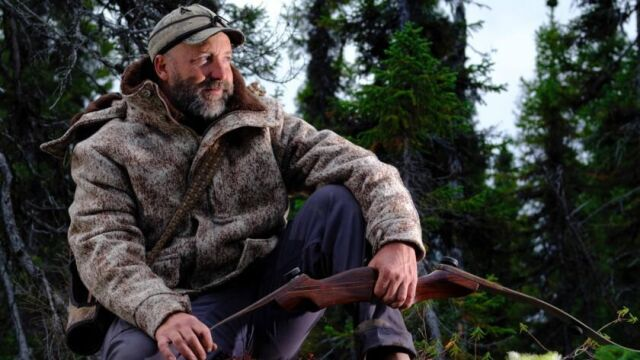
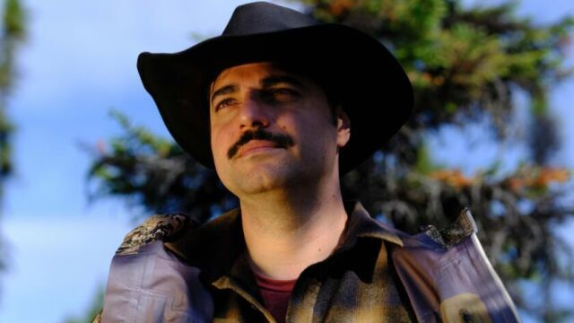
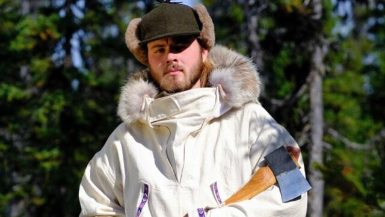

1stWinner
1stWinnerJuan Pablo Quinonez
Outdoor Professional
- Lasted
- 78 days
- Age
- 30
- From
- Pinawa, Manitoba, Canada
Loadout
- Ferro rod
- Paracord
- 2-quart pot
- Axe
- Fishing line and hooks
- Saw
- Bow and arrows
- Sleeping bag
- Trapping wire
- Multitool
Alone
Polar Bear Island · Big River, Labrador, Canada · Dropped off 18 Sep 2021 · Premiered 26 May 2022
Days each survivalist lasted, in finishing order, and why they tapped out. Every season page uses the same 0–100 day scale so seasons can be compared at a glance.









Who they are, where they're from and the ten items they carried in.
1stWinnerOutdoor Professional
Loadout
Wilderness/Primitive Skills Instructor
Loadout
Physician
Loadout
Alpaca Shearer, Treehouse Builder
Loadout
Wilderness Survival Instructor
Loadout
Prescribed Fire Practitioner, Regenerative Agriculturalist, Leatherworker
Loadout
Commercial Fisherman
Loadout
Hunting And Packgoat Guide
Loadout
Community Leadership
Loadout
Wilderness Expedition Guide
Loadout
How many survivalists chose each item (items grouped into simplified categories).
Air dates, survivalists remaining at the start of each episode, viewers and IMDb rating.
| Ep | Title & opening quote | Aired | Remaining | Viewers (M) | IMDb |
|---|---|---|---|---|---|
| 1 | Drop Shock“A journey of a thousand miles must begin with a single step.” — Lao Tzu | 26 May 2022 | — | — | |
| 2 | Consequences“Don't feel entitled to anything you didn't sweat and struggle for.” — Marian Wright Edelman | 2 Jun 2022 | — | — | |
| 3 | The Law of the Land“The future depends on what we do in the present.” — Mahatma Gandhi | 9 Jun 2022 | — | — | |
| 4 | The Beaver“It's on the strength of observation and reflection that one finds a way.” — Claude Monet | 16 Jun 2022 | — | — | |
| 5 | The Land Giveth…“One thorn of experience is worth a whole wilderness of warning.” — James Russell Lowell | 23 Jun 2022 | — | — | |
| 6 | The Weasel“Success does not consist in never making mistakes but in never making the same one a second time.” — George Bernard Shaw | 30 Jun 2022 | — | — | |
| 7 | The Birds“And into the forest I go, to lose my mind and find my soul.” — John Muir | 7 Jul 2022 | — | — | |
| 8 | Gut Feeling“Never to suffer would never to have been blessed.” — Edgar Allen Poe [sic] | 14 Jul 2022 | — | — | |
| 9 | The Ice Up“Never give up, for that is just the place and time that the tide will turn.” — Harriet Beecher Stowe | 21 Jul 2022 | — | — | |
| 10 | Winter's Grasp“Solitude was my only consolation - deep, dark, deathlike solitude.” — Mary Shelley | 28 Jul 2022 | — | — | |
| 11 | Fight, Flight or Freeze“Out of difficulties grow miracles.” — Jean de La Bruyère | 4 Aug 2022 | — | — |